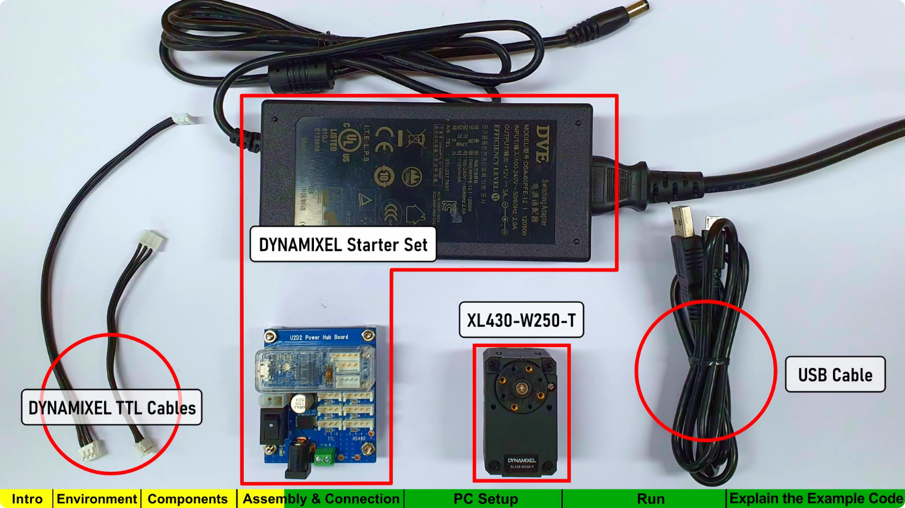
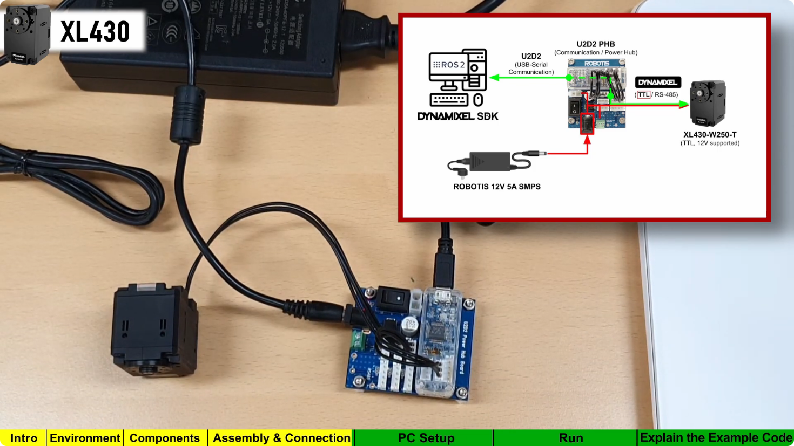
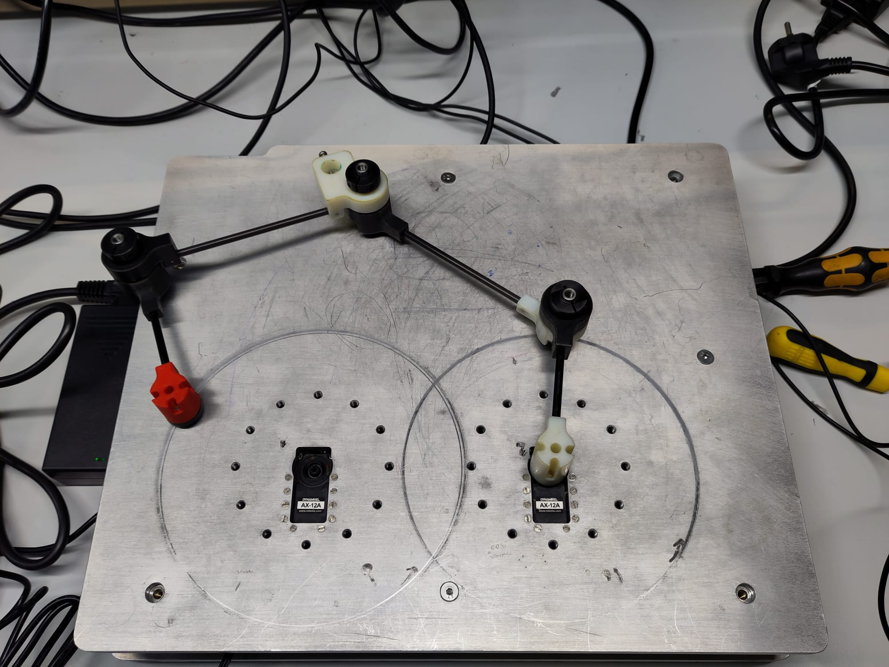
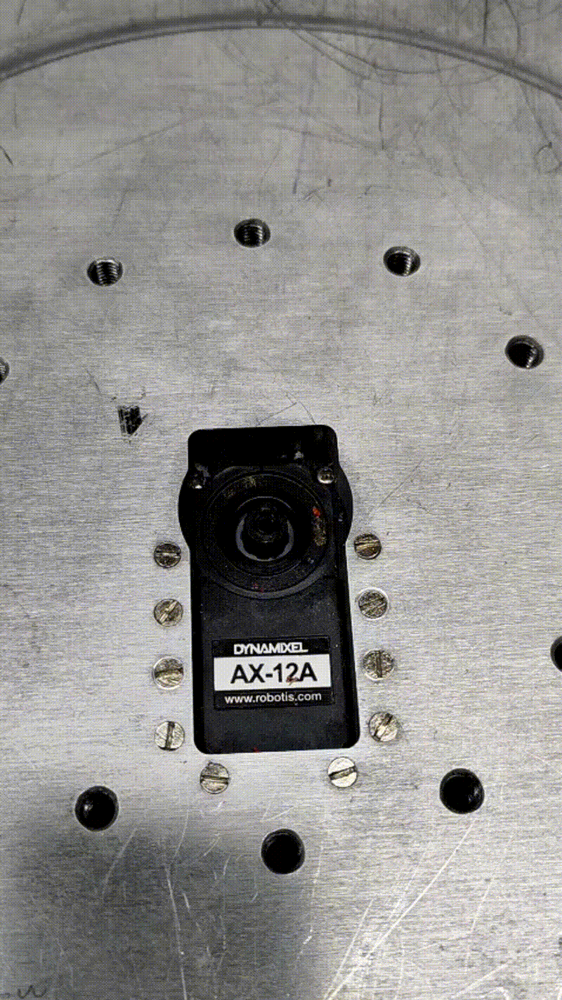

Tests et installation logicielle
Premier test : Utilisation des moteurs Dynamixel
Rapellons que nous utilisons les servomoteur AX-12 de chez Dynamixel. Pour les piloter nous utilisons le convertisseur de communication USB U2D2.
Branchement des moteurs :
Pour tester les moteurs, nous avons suivi un tutoriel de Robotics OpenSourceTeam. Dans leur vidéo : DYNAMIXEL Quick Start Guide for ROS 2 ici, il présentent comment brancher les différents composants entre eux et comment faire tourner un moteur XL430-W250 de chez Dynamixel. Il faudra donc adapter certaines parties du code. L’objectif est de déjà commander un moteurs. Puis dans un second temps, de faire le lien entre l’URDF et le pilotage des moteurs.
Matériel nécéssaire d’après la vidéo :
{kind=link}

Note
Nous remplaçons le moteur XL430-W250-T par le AX-12A
Branchement à effectuer :
{kind=link}

Programmation :
Tout d’abord, nous avons créé notre répertoire de travail :
mkdir -p ~/robotics_ws/src
Puis nous nous rendons dedans à l’aide de la commande suivante : .. code-block:: bash
cd ~/robotics_ws/src/
Ensuite nous clonons l’exemple de Dynamixel rajoutons humbel-devel afin que nous puissions le lancer avec n’importe quelle version de ROS2:
git clone -b humbel-devel https://github.com/ROBOTICS-GIT/DynamixelSDK
Puis, entrez afin de compiler le projet:
cd ~/robotis_ws && colcon build --symlink-install
A présent, sourçons notre projet à l’aide de la commande suivante : .. code-block:: bash
source /opt/ros/humble/setup.bash
Afin d’éviter de devoir sourcer dans chaque terminal, modifions le fichier bashrc.
sudo nano ~/.bashrc
Puis Ctrl + S et Ctrl + X pour enregistrer et quitter.
La communication avec les moteurs se fait via USB. Via la commande suivante, nous pouvons savoir sur quel port nous communiquons : Retournons tout d’abord à la racine
cd ..
cd ..
ls /dev/tty*
Dans notre cas le port était : /dev/ttyUSB0
Puis utilisons whoami afin de permet de connaitre le nom de son compte linux :
whoami
sudo usermod -aG dialout <linux_account>
Le projet que nous avons cloné, est adapté pour les moteurs XL430-W250. Ainsi nous devons adapter le code pour qu’il fonctionne avec nos moteurs. Nous devons utiliser adapter les adresses du tableau : Control Table of Ram Area de la datasheet. Nous devons changer certaines adresses dans le fichier read_write_node.cpp. Ainsi nous avons changé de répertoire et sommes allez dans
cd ~/robotis_ws/src/DynamixelSDK/dynamixel_sdk_examples/src && code .
Dans le fichier read_write_node.cpp, nous avons changez les lignes 42 à 46 suivantes en :
// Control table address for X series (except XL-320)
#define ADDR_OPERATING_MODE 255
#define ADDR_TORQUE_ENABLE 24
#define ADDR_GOAL_POSITION 30
#define ADDR_PRESENT_POSITION 36
Et ligne 49, nous avons adapté le protocole de communication.
#define PROTOCOL_VERSION 1.0
Puis ligne 52 nous devons adapter le baudrate en 115200 afin de communiquer à la même fréquence Puis nous faisons un colcon build : .. code-block:: bash
cd ~/robotics_ws rm -rf build install log colcon build –symlink-install
Puis sourçons :
cd ~/robotis_ws && source install/setup.bash
Pour éviter de casser la maquette, nous avons déconnecté le bras du moteur 1.
{kind=link}

Ensuite lançons l’exemple. A la racine faire :
ros2 run dynamixel_sdk_examples read_write_node
Puis dans un seconde terminal, écrire :
ros2 topic pub -1 /set_position dynamixel_sdk_custom_interfaces/SetPosition "{id: 1, position: 0}"
Faire varier 0 entre 0 et 1023, afin de faire tourner le moteur d’un certain angle.
Position 1
Piloter en 4 positions :
Ensuite, nous avons créé un noeud, afin que notre moteur 1 aille en 4 positions différentes. Pour ce faire, nous nous créons un package :
cd ~/robotics_ws/src
ros2 pkg create --build-type ament_python dynamixel_controller --dependencies rclpy dynamixel_sdk_custom_interfaces
Nous créons le node Python :
nano move_positions.py
Dans ce fichier, nous collons le code python suivant :
#!/usr/bin/env python3
import rclpy
from rclpy.node import Node
from dynamixel_sdk_custom_interfaces.msg import SetPosition
import time
class DynamixelMover(Node):
def __init__(self):
super().__init__('dynamixel_mover')
# Publisher sur le topic /set_position
self.pub = self.create_publisher(SetPosition, '/set_position', 10)
# Liste des positions à atteindre
self.positions = [0, 200, 500, 300, 0]
self.id = 1 # ID du moteur Dynamixel
self.timer_period = 2.0 # secondes entre chaque mouvement
self.timer = self.create_timer(self.timer_period, self.move_motor)
self.index = 0
self.get_logger().info("Dynamixel Mover Node Started")
def move_motor(self):
if self.index < len(self.positions):
pos = self.positions[self.index]
msg = SetPosition()
msg.id = self.id
msg.position = pos
self.pub.publish(msg)
self.get_logger().info(f'Publishing position #{self.index+1}: {msg}')
self.index += 1
else:
self.get_logger().info("All positions reached, stopping.")
self.timer.cancel() # stop the timer
def main(args=None):
rclpy.init(args=args)
node = DynamixelMover()
rclpy.spin(node)
node.destroy_node()
rclpy.shutdown()
if __name__ == '__main__':
main()
Puis on modifie le fichier setup.py
Dans : ~/robotics_ws/src/dynamixel_controller/setup.py il faut modifier :
entry_points={
'console_scripts': [
'move_positions = dynamixel_controller.move_positions:main',
],
},
Dans ~/robotics_ws, on construit le package :
colcon build --symlink-install
source install/setup.bash
Puis, on lance le node :
ros2 run dynamixel_controller move_positions
Dans le terminal, nous voyions :
[INFO] [dynamixel_mover]: Publishing position #1: dynamixel_sdk_custom_interfaces.msg.SetPosition(id=1, position=1000)
[INFO] [dynamixel_mover]: Publishing position #2: ...
Position 4
{kind=link}

Interprétation de la position angulaire
0 → 0°
512 → ~150°
1023 → ~300°
Avertissement
Le débattement angulaire maximal est de 300°.